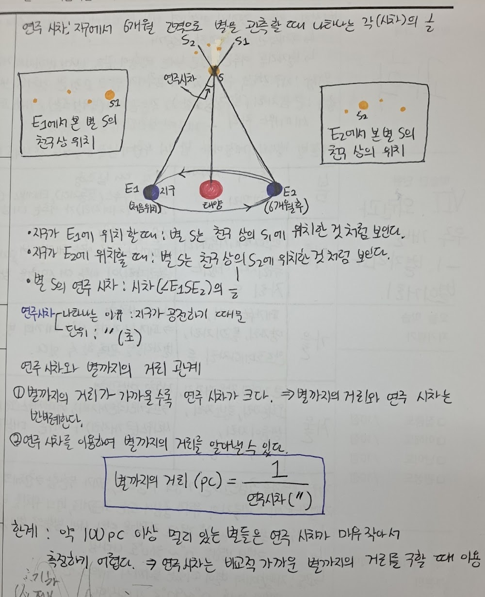
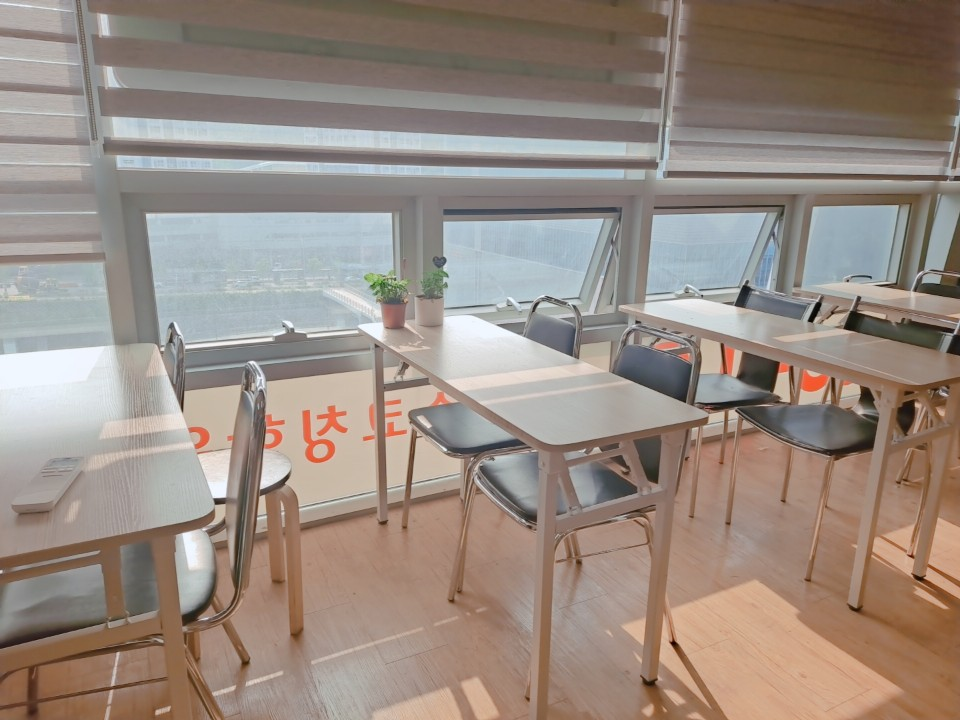
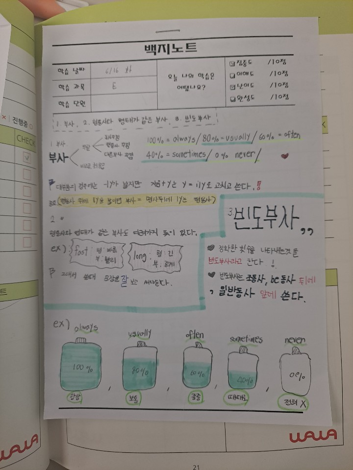

안녕하세요, 은평구 역촌동 와와학습코칭 구산점입니다. 오늘은 중학생 학부모님들이 가장 많이 물어보시는 자기주도학습 습관 이야기를 전해드립니다.
중학교 성적은 '공부 습관'이 만듭니다
구산중·은평중, 예일여중·선일여중 학생들을 지도하다 보면 확실히 느낍니다. 중학교 성적은 머리보다 매일 앉아서 스스로 공부하는 습관에서 갈립니다. 학원을 아무리 많이 다녀도, 집에 와서 혼자 복습하는 시간이 없으면 실력이 쌓이지 않습니다.
그래서 구산점은 '가르치는 것'만큼 '스스로 하게 만드는 것'에 집중합니다. 방학 동안 하루 공부 루틴을 함께 설계하고, 그 루틴을 지키는 힘을 길러 줍니다.

구산점의 자기주도학습 3단계
막연히 "스스로 공부해라"라고 하면 아이는 무엇을 해야 할지 모릅니다. 구산점은 습관을 구체적인 절차로 만들어 줍니다.
- 계획 — 오늘 할 분량을 아이가 직접 플래너에 적습니다 (스스로 정해야 지킵니다)
- 실행 — 조용한 자습실에서 정해진 시간 동안 집중해서 해냅니다
- 점검 — 배운 내용을 코치 선생님께 말로 설명하고, 막힌 부분을 다시 봅니다
영어는 매일 단어·독해를 꾸준히, 국어는 지문을 스스로 분석하고 요약하는 훈련을 반복합니다. 이 루틴이 몸에 배면 2학기 내신이 달라집니다.

방학이 습관을 바꾸는 골든타임
학기 중에는 진도와 숙제에 쫓겨 습관을 바꿀 여유가 없습니다. 방학이야말로 공부 습관을 새로 세팅할 수 있는 골든타임입니다. 역촌e편한세상·현대아파트·역말두산위브 단지 학부모님들, 지금 만든 습관이 중3, 그리고 고등학교까지 이어집니다.
와와학습코칭 구산점 학년별 공부 방법
역촌동 와와학습코칭(와와학습코칭 구산점)은 초등학생·중학생·고등학생 각 학년에 맞는 공부 방법으로 지도합니다. 조용한 자습실·공부방에서 스스로 공부하고, 영어학원·수학학원·과학학원·국어학원처럼 과목별 코칭까지 한곳에서 받을 수 있습니다.
- 초등학생 (초1·초2·초3·초4·초5·초6) — 매일 정해진 분량을 스스로 해내는 공부 습관과 기초 개념 잡기. 역촌동 초등 영어학원·수학학원·공부방을 찾으신다면.
- 중학생 (중1·중2·중3) — 자기주도학습 루틴 정착, 내신 대비와 오답·서술형 훈련. 역촌동 중등 영어학원·수학학원·과학학원·국어학원.
- 고등학생 (고1·고2) — 내신과 수능을 함께 잡는 자기주도학습 플래닝과 취약 과목 집중. 역촌동 고등 영수학원·종합학원·자기주도학습.
와와학습코칭 구산점 위치와 주변
- 🚇 교통 — 6호선 역촌역 인근, 연서로 130 4층
- 🏢 인근 아파트 — 역촌e편한세상, 역촌현대아파트, 역말두산위브, 신도브래뉴 등 단지에서 도보로 오실 수 있습니다.
와와학습코칭 구산점 인근 학교
역촌동 와와학습코칭(와와학습코칭 구산점)은 인근 학교 학생들의 내신·수능을 함께 준비합니다. 아래 학교에 다니는 학생이라면 영어학원·수학학원·과학학원·국어학원을 따로 찾을 필요 없이, 가까운 우리 센터에서 과목별 1:1 자기주도학습 코칭을 받을 수 있습니다.
- 인근 중학교 — 구산중학교, 은평중학교, 예일여자중학교, 선일여자중학교 영어학원·수학학원·과학학원·국어학원
- 인근 고등학교 — 예일여자고등학교, 선일여자고등학교 영어학원·수학학원·과학학원·국어학원
📍 와와학습코칭 구산점 센터 정보 자세히 보기 — 주소·전화·인근 학교 안내를 확인하실 수 있습니다.